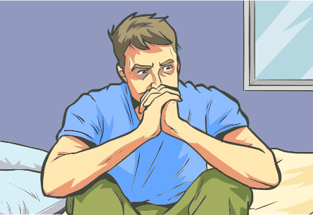

Os transtornos de insônia são os principais distúrbios relacionados ao sono, sendo a doença mais prevalente e considerada um problema de saúde pública. No entanto, raramente é diagnosticada e tratada de forma adequada. Ela também pode ser um sintoma de uma doença psiquiátrica ou neurológica. Queixas de insônia grave estão presentes em 25% a 45% dos pacientes portadores de um transtorno de ansiedade. Existe uma importante associação entre insônia e depressão.
